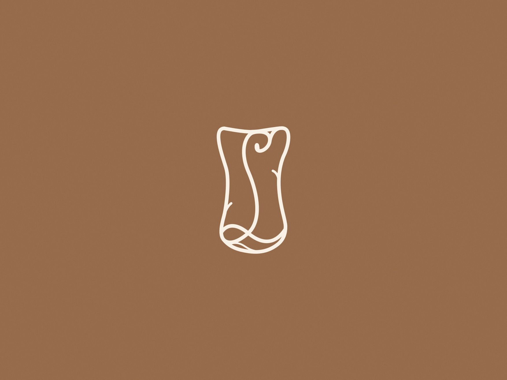
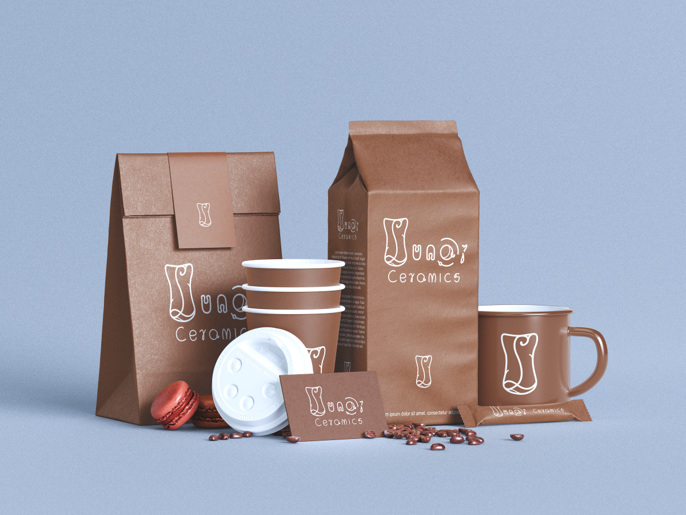
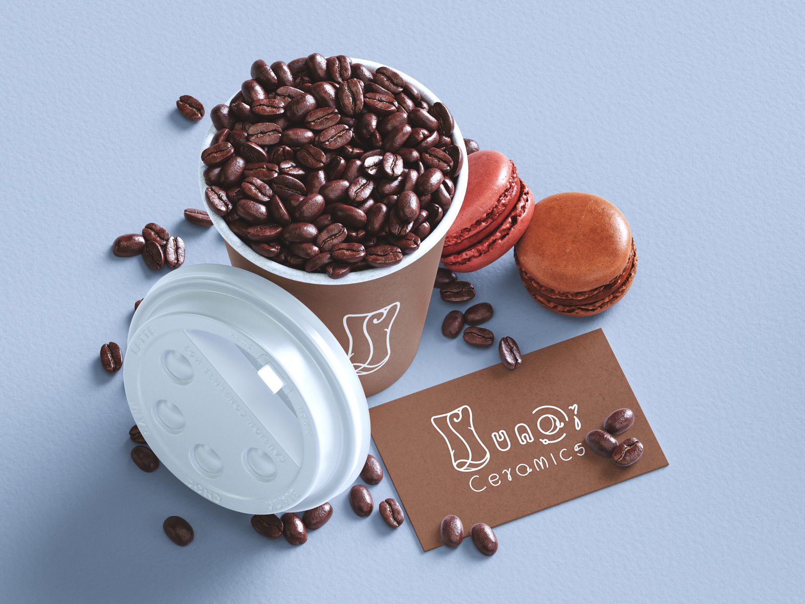
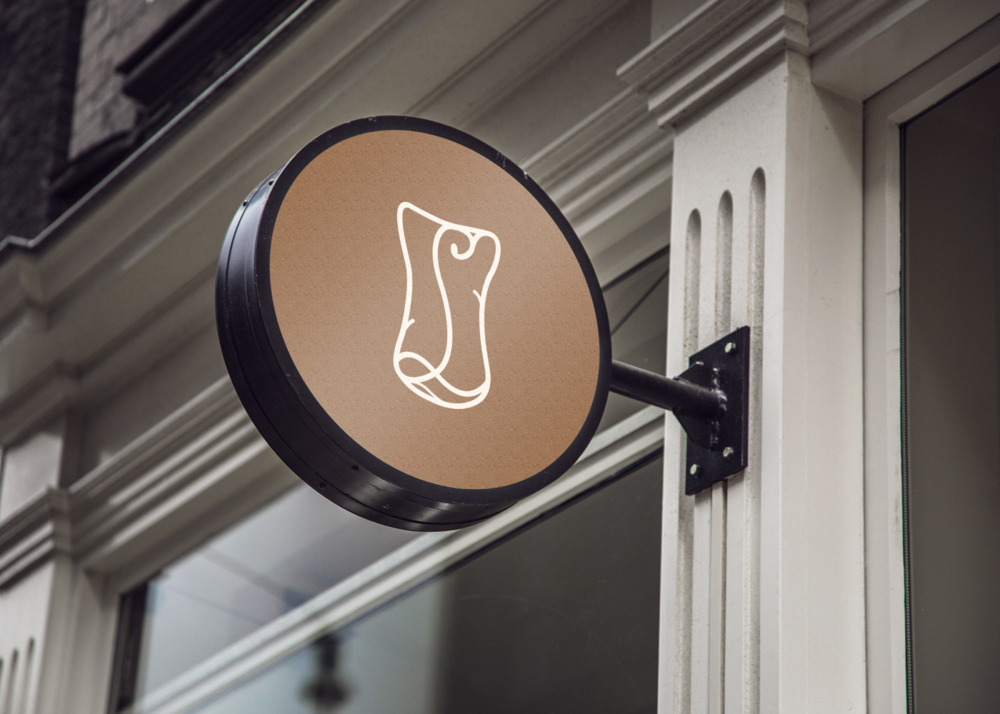
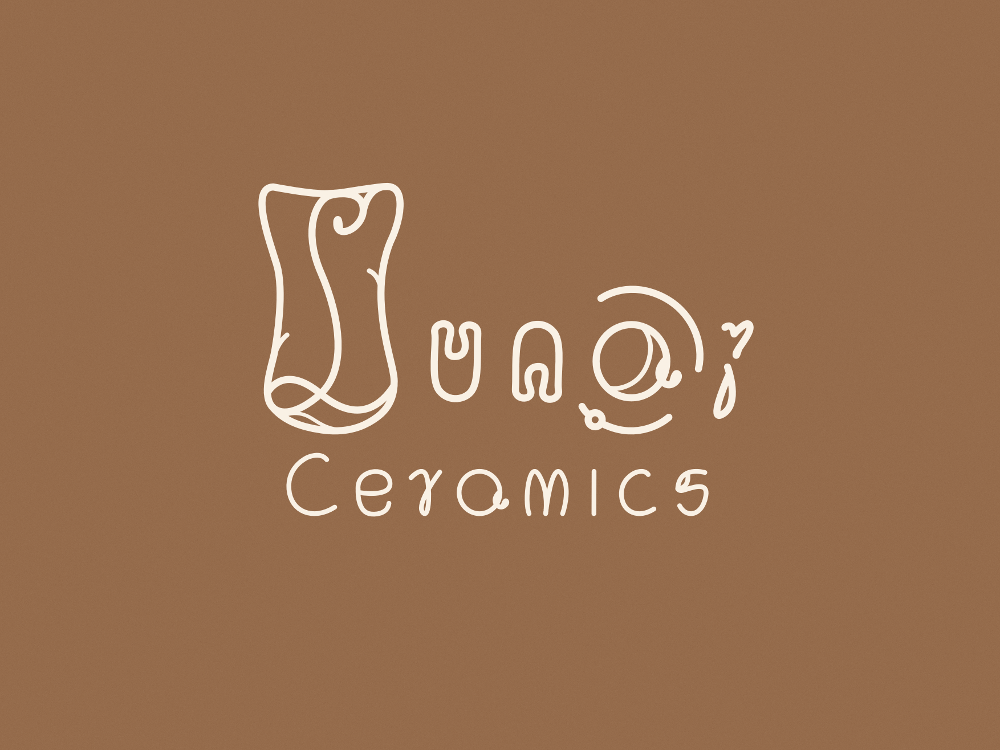

Lunar Ceramics
Identyfikacja wizualna & Opakowania

Sygnet
Chciałem by sygnet przedstawiał połączenie między kubkiem do kawy i wyrobem z gliny.


Marka
Marka bazuje na usługach, w tym usłudze kawiarnianej.
Kolorystyka
Zastosowałem ziemiste barwy, które nawiązują bezpośrednio do gliny i kawy.

